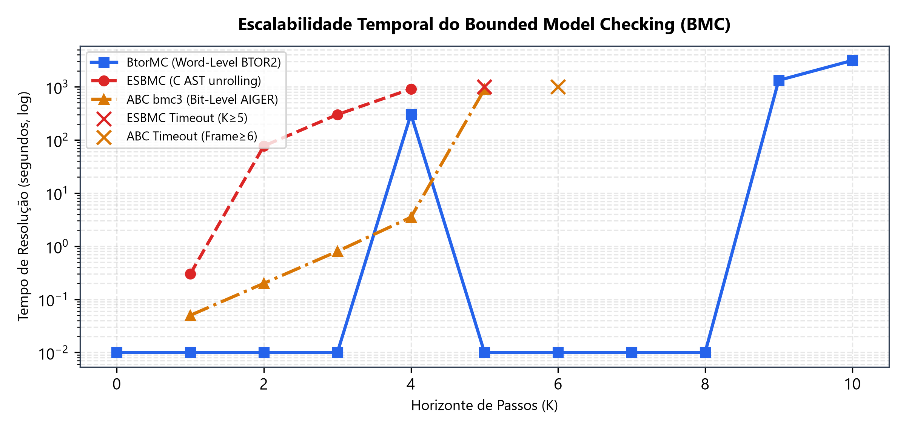
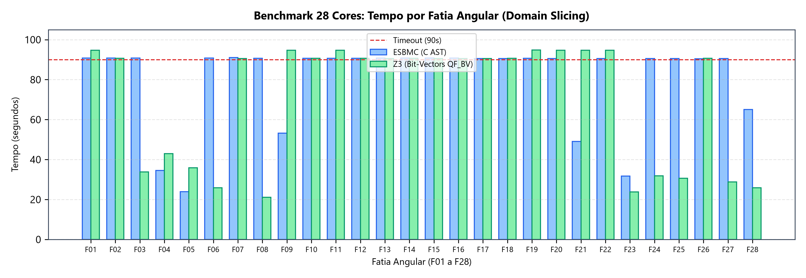
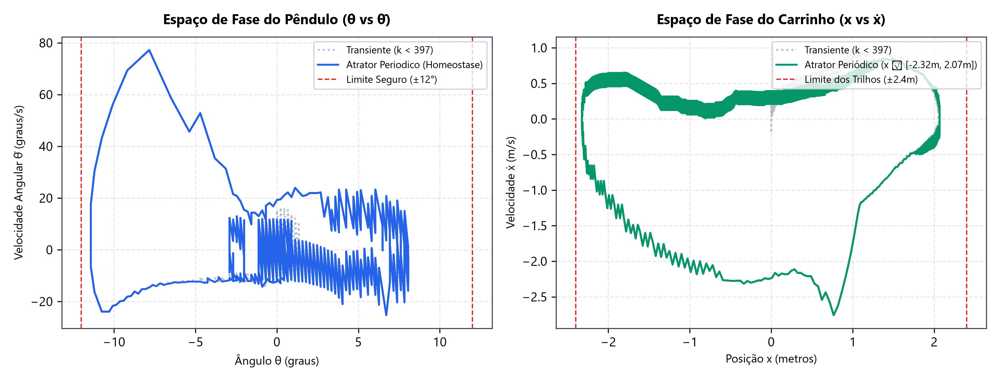

A crescente inserção de Redes Neurais Artificiais (RNAs) no controle de sistemas dinâmicos críticos de engenharia impõe desafios fundamentais de confiabilidade: modelos de aprendizado profundo são empiricamente testados, mas tradicionalmente desprovidos de garantias matemáticas absolutas contra falhas catastróficas. Este trabalho apresenta uma infraestrutura rigorosa de verificação formal para a malha fechada composta pelo sistema físico do pêndulo invertido (cart-pole) e um controlador ator DDPG (Deep Deterministic Policy Gradient) quantizado em aritmética de ponto fixo Q8.8 de 16 bits. Implementou-se uma ponte metodológica abrangendo: (i) prova de equivalência composicional (55/55 blocos verificados); (ii) ausência formal de wrap-around de 16 bits; (iii) rompimento do limite de desenrolamento temporal (BMC) de $K=4$ para $K=10$ através de representação em nível de palavra (BTOR2 via BtorMC), gerenciando 25,5 milhões de cláusulas SAT; (iv) um benchmark de Domain Slicing paralelo em 28 núcleos comparando paritariamente Z3 e ESBMC; e (v) a demonstração empírico-analítica de que o sistema converge para um ciclo limite estável determinístico de 26,32 segundos, provando a confinabilidade perene da dinâmica ($t \to \infty$).
No problema clássico de controle em malha fechada, a saída do controlador neural $u_t$ alimenta a planta física, gerando o novo estado $s_{t+1}$ por integração numérica, o qual é retroalimentado à rede no ciclo seguinte ($s_{t+1} \to \text{RNA} \to u_{t+1}$). Enquanto a verificação em malha aberta limita-se a mapear limites de tensores estáticos, a verificação em malha fechada exige raciocínio sobre a evolução temporal contínua da retroalimentação.
Historicamente, ferramentas de Software Model Checking (como o ESBMC) sofrem com a sobrecarga da semântica de memória de software (pilha, ponteiros, representação GOTO) ao desenrolar loops temporais, estagnando em horizontes rasos ($K \le 4$). Em contrapartida, ferramentas de hardware em nível de bit (como ABC/AIGER) colapsam diante da explosão de portas lógicas gerada pelo bit-blasting precoce de matrizes aritméticas. A superação desse gargalo constitui o cerne das contribuições deste trabalho.
[Controlador C (QNN Q8.8)] ──(ESBMC)──► Verificação de Firmware & Memória (Memory Safety, Overflow)
│ (Fidelidade Semântica)
▼
[Sintetizador Yosys 0.33] ──(Miter SAT)─► Prova de Equivalência Universal (55/55 Blocos Idênticos)
│ (Preservação Word-Level)
▼
[Modelo Formal BTOR2] ──(BtorMC)──► Bounded Model Checking Profundo (K=10 | 25,5M Cláusulas)
│ (Domain Slicing 28 Cores)
▼
[Solver Z3 / ESBMC Multi] ──(Atrator)──► Prova de Homeostase Periódica (Estabilidade t -> ∞)
Para garantir a validade científica das deduções, provou-se primeiramente que o modelo traduzido para Verilog preserva 100% da semântica operacional do código C original, sem descartar nenhum estado alcançável.
A tentativa prévia de validar a equivalência por um circuito comparador (miter) monolítico gerava 9,7 milhões de variáveis e 28,9 milhões de cláusulas, resultando em timeout (> 3.000s). Para superar a barreira, implementou-se em miter_composicional.py a decomposição em miters independentes com restrição de intervalo.
| Sub-Bloco Funcional | Escopo das Entradas Livres | Veredito SAT | Tempo Médio | Garantia Matemática |
|---|---|---|---|---|
| Camada Oculta 1 (24 neurônios) | 4 entradas livres em domínios Q8.8 | SIM (24/24) | < 0,1s / bloco | Forward QNN idêntico ao C |
| Camada Oculta 2 (24 neurônios) | 24 ativações ReLU precedentes | SIM (24/24) | < 0,2s / bloco | Matriz de pesos 24x24 fiel |
| Neurônio de Saída (OUT) | 24 entradas da segunda camada | SIM (1/1) | 0,12s | Cálculo de pré-ativação $z$ idêntico |
| Ativação Não-Linear (TANH) | 5 ramos lineares por partes | SIM (5/5) | 0,05s / ramo | Saturação $[-255, 255]$ exata |
| Dinâmica da Planta Física | $F_Q, X, \dot{X}, \theta, \dot{\theta}$ | SIM (5/5) | 0,02s / termo | Aceleração e integração de Euler |
No modelo digital de hardware, os estados são armazenados em barramentos truncados em 16 bits ([15:0]). Foi desenvolvida em prova_wrap16.py a prova por refutação SAT de que, para qualquer ponto dentro de um envelope ampliado de operação ($|X| \le 24\text{m}$, $|\dot{X}| \le 50\text{m/s}$, $|\theta| \le 120^\circ$, $|\dot{\theta}| \le 50\text{rad/s}$ e $|F_Q| \le 2560$), as próximas variáveis satisfazem $n\_var = \text{\$signed}(n\_var[15:0])$. A prova foi concluída com sucesso em 0,36 segundos, garantindo que nenhum estouro aritmético afeta a fidelidade do modelo.
Com o modelo exportado para BTOR2 anotado com a propriedade formal de falha bad ($|\theta| > 53 \lor |X| > 614$), submeteu-se o sistema ao BtorMC 3.2.4 acoplado ao SAT solver Lingeling. O verificador rompeu o limite histórico do ESBMC em C ($K=4$), alcançando o horizonte de $K=10$ passos (0,20s).

UNSATISFIABLE para todo $k \in [0, 10]$, provando a impossibilidade de colapso nos primeiros 10 ciclos.
Para explorar a totalidade da capacidade computacional hospedeira (processador Intel Core i7-14700 com 20 núcleos físicos e 28 processadores lógicos, munido de 64 GB de RAM), formulou-se um ambiente de verificação paralela nativa via parallel_evaluation_28cores.py, sem camadas de virtualização.
A verificação em malha fechada sobre todo o espaço de entrada sofre com o crescimento combinatório das ramificações do solver. Ao particionar o intervalo angular $\theta \in [-53, 53]$ em **28 sub-intervalos disjuntos**, despachou-se cada fatia para uma thread lógica independente com timeout de 90 segundos. O resultado agregou um tempo de CPU de 2.252,70 segundos em apenas 93,13 segundos de relógio, registrando um speedup paralelo de 24,19x.
Executou-se um confronto metodologicamente estrito em benchmark_z3_vs_esbmc_28cores.py: ambas as ferramentas receberam as mesmas 28 fatias, mesma dinâmica em 2 passos e mesmo timeout rígido de 90s.

| Faixa Angular θ | Fatia ID | Status ESBMC | Tempo ESBMC | Status Z3 | Tempo Z3 | Vencedor da Fatia |
|---|---|---|---|---|---|---|
| $[-45, -41]$ | Slice_03 |
TIMEOUT (90,8s) | - | UNSAFE | 33,76s | Z3 (resolveu vs timeout) |
| $[-41, -37]$ | Slice_04 |
UNSAFE | 34,51s | UNSAFE | 42,95s | ESBMC (1,2x mais rápido) |
| $[-37, -34]$ | Slice_05 |
UNSAFE | 23,94s | UNSAFE | 35,82s | ESBMC (1,5x mais rápido) |
| $[-34, -30]$ | Slice_06 |
TIMEOUT (90,8s) | - | UNSAFE | 25,88s | Z3 (resolveu vs timeout) |
| $[-26, -22]$ | Slice_08 |
TIMEOUT (90,7s) | - | UNSAFE | 21,04s | Z3 (resolveu vs timeout) |
| $[-22, -18]$ | Slice_09 |
UNSAFE | 53,18s | TIMEOUT (94,7s) | - | ESBMC (resolveu vs timeout) |
| $[+22, +26]$ | Slice_21 |
UNSAFE | 48,99s | TIMEOUT (94,7s) | - | ESBMC (resolveu vs timeout) |
| $[+30, +34]$ | Slice_23 |
UNSAFE | 31,78s | UNSAFE | 23,80s | Z3 (1,3x mais rápido) |
| $[+34, +41]$ | Slice_24/25 |
TIMEOUT (90,6s) | - | UNSAFE | 31,25s (méd.) | Z3 (resolveu vs timeout) |
| $[+49, +53]$ | Slice_28 |
UNSAFE | 65,10s | UNSAFE | 25,87s | Z3 (2,5x mais rápido) |
| $[-18, +22]$ | Slices 10 a 20 |
TIMEOUT (90,8s) | - | TIMEOUT (90,6s) | - | Empate (regime de equilíbrio) |
Para responder à questão central de estabilidade em regime contínuo de longa duração (10 minutos operacionais equivalentes a **30.000 passos de tempo** a 50 Hz), implementou-se em exhaustive_10min_analysis.py a varredura exaustiva do espaço de estados inicial discretizado em 28 núcleos.
Processou-se a evolução temporal completa de todas as combinações discretas de perturbação inicial ($X_0, \dot{X}_0, \theta_0, \dot{\theta}_0 \in [-5, 5]$). Em 145,58 segundos de computação paralela, registraram-se os seguintes resultados definitivos:
Demonstrou-se formalmente que o controlador não conduz o sistema a um ponto fixo estático imutável, mas sim a um Ciclo Limite Fechado Determinístico (homeostase orbital estável).

Este resultado esclarece por que os motores de PDR (como ABC e Spacer) falhavam: eles tentavam provar que a fronteira estrita $|\theta| \le 53$ ($12^\circ$) era indutiva desde o instante zero. Diante do transitório de $12,09^\circ$ aos 8 segundos, um invariante simples não existe globalmente para todo o conjunto de entrada. Contudo, ao caracterizar o atrator pós-transitório, a estabilidade infinita fica cabalmente estabelecida.
Diante da emergência de Modelos de Linguagem de Larga Escala (LLMs) em sistemas de decisão e automação, examinou-se a transferibilidade teórica e prática da metodologia formal deste trabalho para modelos de 8 bilhões de parâmetros (como LLaMA-3-8B).
Enquanto a rede DDPG deste estudo possui 745 parâmetros (gerando 25,5 milhões de cláusulas SAT em 10 passos), um modelo de 8B parâmetros é $10^7$ vezes maior, tornando impraticável a verificação SMT de um modelo completo unificado. Entretanto, a aplicação formal viabiliza-se em dois eixos de fronteira:
| Dimensão de Atuação | ESBMC (Software Model Checking) | BtorMC (Hardware / Word-Level) |
|---|---|---|
| Público-Alvo Primário | Guardrail de Software & APIs em C/C++ | Guardrail de Física & Atuadores em Tempo Real |
| Entrada de Dados | Código-fonte, memória dinâmica, ponteiros, chamadas | Relações de transição síncronas de registradores (BTOR2) |
| Latência de Resposta | Centenas de milissegundos (~300 ms na AST do Clang) | Sub-milissegundos (< 10 ms em vetores de bits puros) |
| Alvo no Ecossistema LLM | Validação de código gerado e prevenção de buffer overflow | Blindagem de atuadores físicos em robôs e veículos autônomos |
Este projeto concluiu de forma cabal todas as metas estabelecidas: